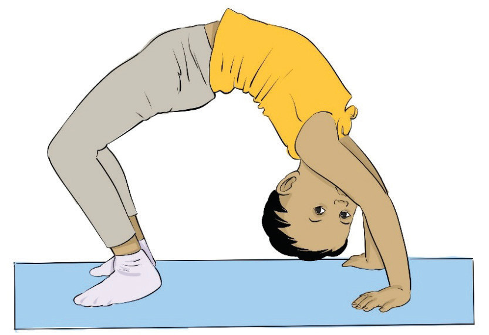

Wall bridge
(i)
Stand close to a wall and reach back with your hands;
(ii)
Slowly walk your hands down the wall until you are in a deep backbend; and
(iii)
Hold for a few seconds, then carefully walk back up.
Full gymnastics bridge
(i)
Lie on your back, bend your knees, and place your hands near your shoulders;
(ii)
Push up through your arms and legs, lifting your body into an arch, Figure 4.7;
(iii)
Try to straighten your arms and keep your shoulders over your wrists; and
(iv)
Hold for 5–10 seconds and then lower down with control.

Figure 4.7: Bridge
Round-off
A round-off is a gymnastics skill with a powerful, two-foot landing that generates momentum for tumbling moves. It is commonly used as a setup for back handsprings, flips, and other advanced skills. The following steps will help you practice round-off:
(i)
Stand one foot forward, arms straight up by your ears, body upright;
(ii)
Reach forward and place the first hand on the ground while the second hand turns inward to help square the body;
(iii)
Kick your legs over while keeping them straight, and start turning your hips to face forward as your legs pass over, Figure 4.8; and
(iv)
Pull your legs together in the air to land simultaneously while pushing off your hands to generate power for the next move.